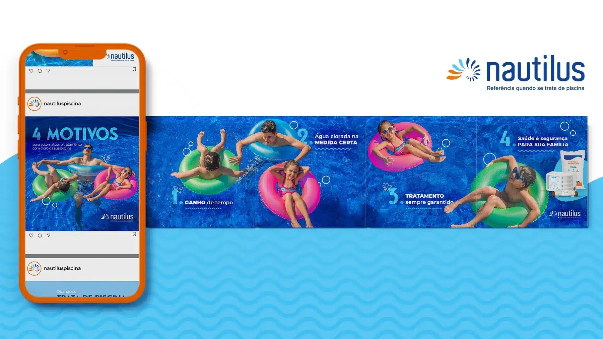
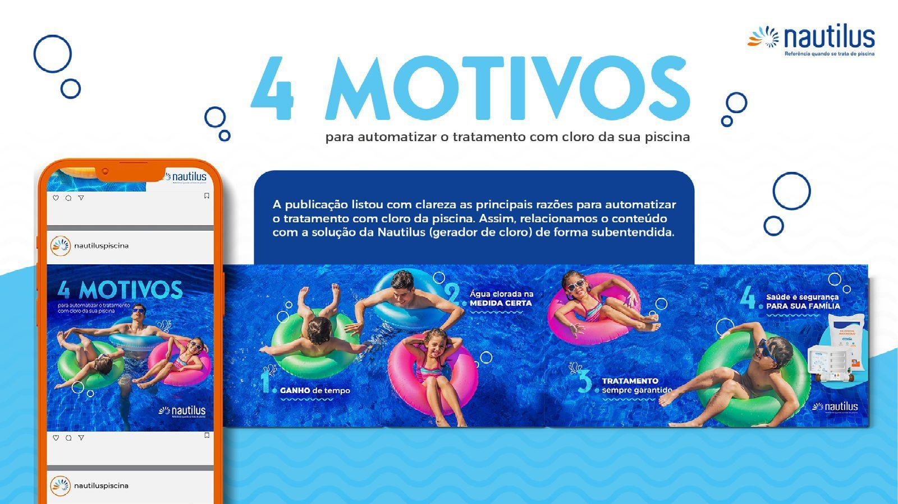
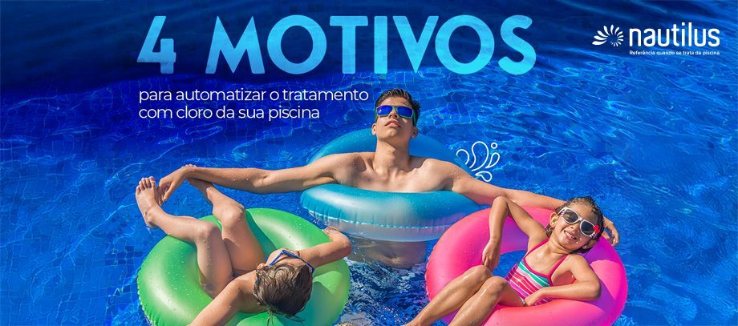
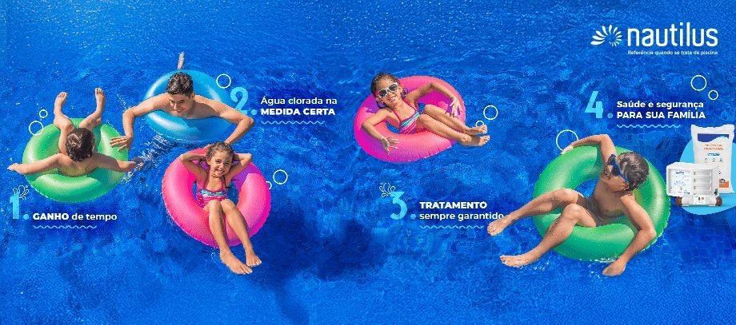

Nautilus — Social Media
Conteúdo que constrói uma ponte entre a necessidade do consumidor e a solução certa.
Case desenvolvido na Agência Bee Creative para Nautilus. Ver case original ↗

01 / O PROJETO E O DESAFIO
Da necessidade do consumidor à solução Nautilus.
A Nautilus é uma empresa brasileira, fundada em 1984, especializada no desenvolvimento, fabricação e comercialização de equipamentos para piscinas.
O desafio era construir uma ponte entre as necessidades dos consumidores e a solução Nautilus, destacando as principais razões para automatizar o tratamento com cloro da piscina.

02 / ATITUDE E RESULTADOS
"4 motivos" para automatizar.
A publicação "4 Motivos para Automatizar o Tratamento com Cloro da Sua Piscina" listou com clareza as principais razões. Assim, relacionamos o conteúdo com a solução da Nautilus (geração de cloro) de forma subentendida.

